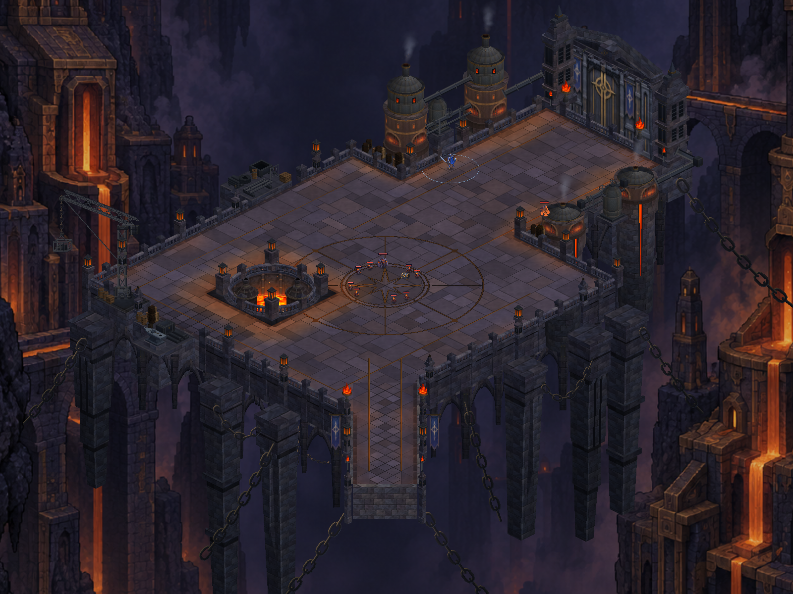
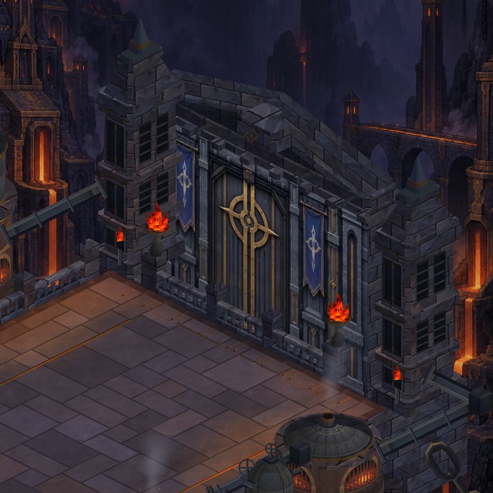
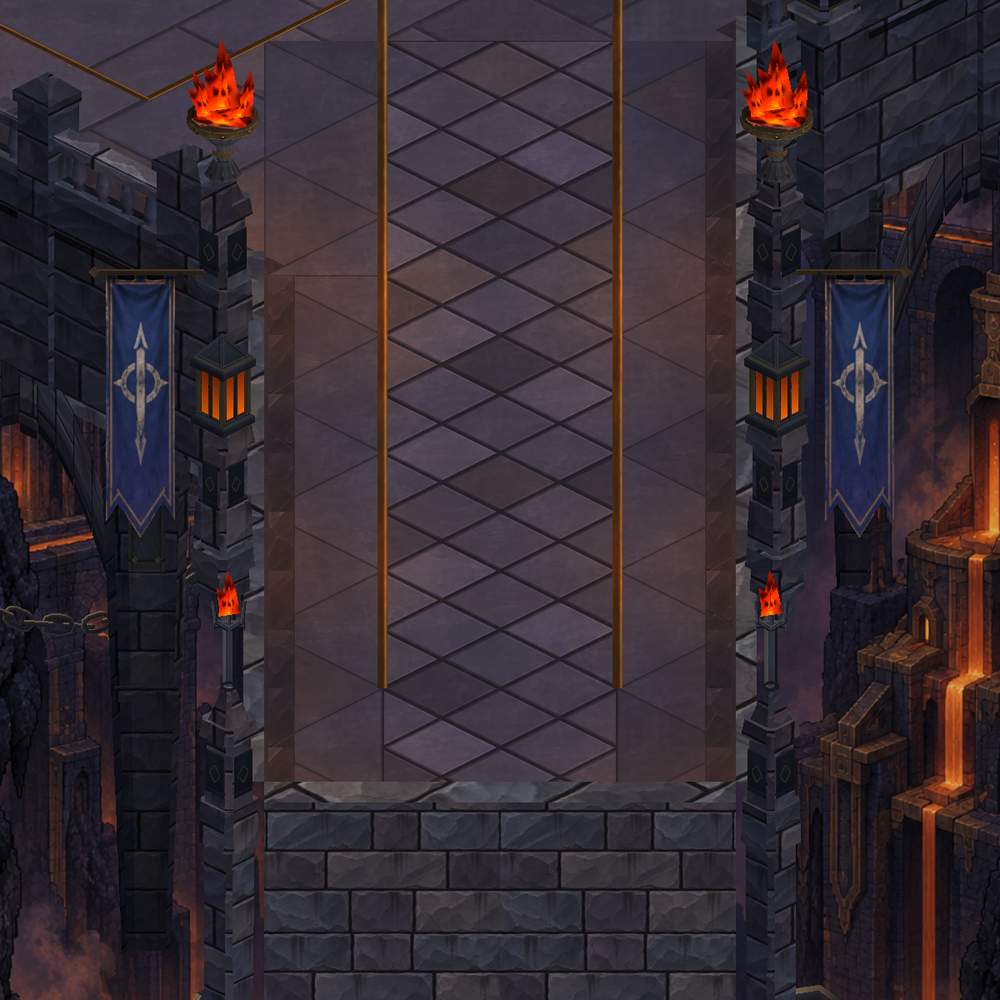
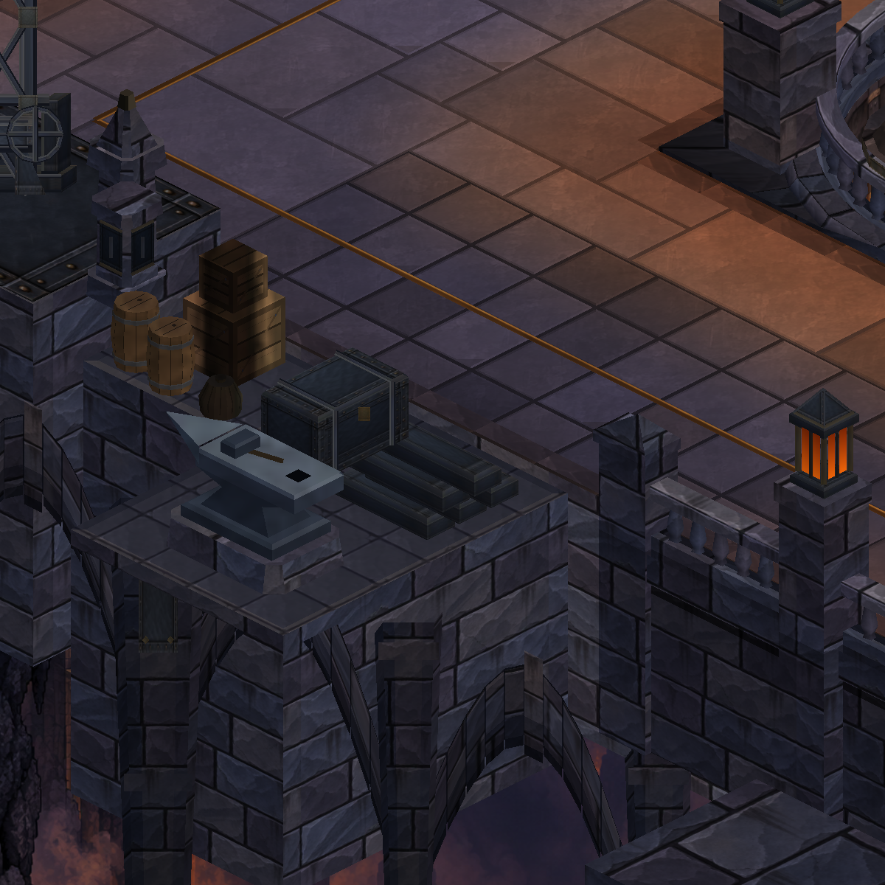
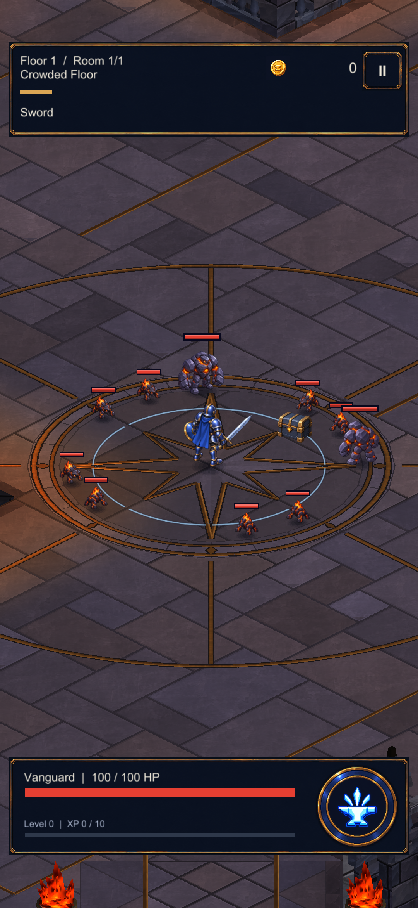

CRYPTFORGE / OCTOBER 6, 2026
Surface continuity & framing study
Actual Unity captures. Installed and briefly reviewed on S23; device evidence below. Static budget unchanged: 17 renderers / 80,316 vertices. Gameplay camera remains unchanged.
This is a restrained surface correction: masonry deposit variation now spans broader, calmer patches; existing workshop soot follows both current service shelves. It is not a new map or a claim of reference-image fidelity.
Validation record · Full framing findings · Measured camera data
Gate alternatives: useful evidence, no camera change
All three images use the same pose and HUD. Neither alternative fully reveals the upper gate. Raising the camera moves the hero 180 pixels down; widening it makes world-space actors 18.2% smaller. Keep current combat framing until a separately validated arrival view or HUD treatment is justified.
| View | Coverage tradeoff |
|---|
| Current | 9-unit width; current actor size and free-band balance. |
| Upward | Same scale, 23.2% less nominal vertical coverage below the hero. |
| Wider | 22.2% more linear coverage; 18.2% smaller actors and pickups. |
Whole foundry

Before · visual closureAfter · surface compositionMasonry course continuity
 Before · visual closure
Before · visual closure
After · surface compositionBridge surface context

Before · visual closureAfter · surface compositionWorkshop context
 Before · visual closure
Before · visual closure
After · surface compositionPortrait route position 2

Before · visual closureAfter · surface compositionPortrait route position 3
S23 installation and short play review
Installed APK hash verified. Guarded gate walk, XP pickups, upgrade choice and enemy contact inspected. Profile and original development files unchanged; temporary flags removed. Initial hitches are recorded in the README; this is not a dense-combat benchmark.